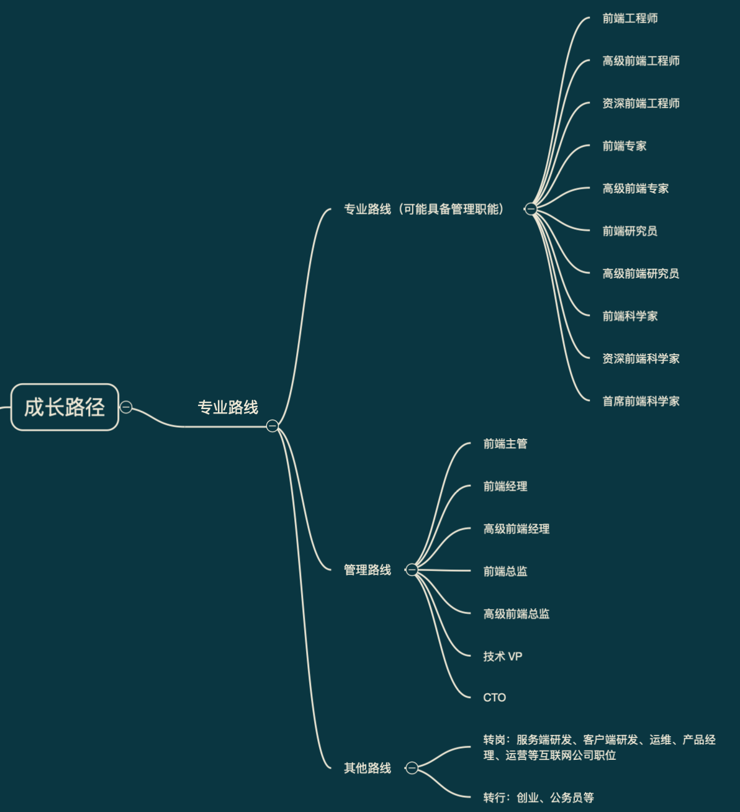

这是一个不好写的话题，因为不同人对于前端工程师成长的理解是不一致的，但最终还是想试着写一写。最主要的原因是想借着自己的这次梳理，沉淀出一些有一定价值的点，分享给团队的伙伴，以此来助力团队伙伴们一起成长。
如何评估成长
谈到成长，首先我能想到的是需要有能衡量「这个人确实成长了」的方法。比如我们想去衡量一个健身的人是否有成长，可以客观的去看他的体脂率，或者主观的去看他的身材靓照。
对于前端工程师，或者说对于软件工程师，如何来衡量是否成长了呢？软件研发行业发展了这么多年，目前比较常见的一种做法是对工程师们进行评级。每个级别都有对应的标准，如果一个人通过付出达到了一个更高的标准，那么就可以说明这个人成长了。
职级体系通常分为专业和管理两个路线，专业路线发展到一定级别可能会具备管理职能，或者完全的转为走管理路线。每个路线上不同的阶段都有对应的具有里程碑意义的岗位名称。此外，会有一些人工作一段时间后有专业和管理路线之外的选择，此类情况不在本文的讨论范围之内。通过脑图的方式，前端工程师的成长路径可以概括为：

职级考察维度
下面从专业路线和管理路线两个维度，说一下不同职业路线大致会包含哪些考察维度。同样，我们来看图说话：
至于对每一个维度的详细阐述，来日方长，以后再说吧。
前端工程师如何成长
当我们明确了职业发展路径和职级考察维度后，就可以有的放矢，让自己成长的更高效。我列举了几个对成长有帮助的点：明确目标、自我驱动、相信积累的力量、重视软技能提升、找到适合的平台和多交流。
每一点都是相对较”虚“的点，但是如果能将认知和实际行动统一，还是会对个人成长有一定帮助的。
明确目标
每个人心中可能有都或大或小的目标，有的目标已经实现了，有的目标定了很多次却从未被实现。放在工作中，其实也是一样的。
工作这几年会发现，有的人目标感很好，能给自己设定合理的目标，甚至能够规划好目标达成的路径，并且大多数时候能良好的完成目标。有的人目标感相对差一些，工作中视野更多的放在完成眼下的工作内容，甚至帮助他制定了有挑战性的目标后最终也不容易实现目标。
前一种类型的人在工作中，会相对成长更快一些，也更容易得到好的激励。所以，当谈论到成长时，清晰的目标还是非常重要的。要想清楚自己在接下来一个月、一个季度、一年、三年、未来的工作中，自己的目标是什么，想成为怎样的人，想做成怎样的事，以及如何能把目标落地。
自我驱动
当我们想清楚想做什么及如何去做的时候，接下来重要的一点是能够让自己朝着既定的方向和目标去付出。付出的过程中，会发生各种各样的事情。事情大到买房、谈婚论嫁，小到和产品经理争论了一个需求点、一盘开黑的王者荣耀、偶尔加个班，这些事情都会去占据一个人有限的精力。当发生这些事情时，一个人的自驱力会影响他最终目标的完成度。
相信积累的力量
有的时候，我们的目标是很大的。比如：精通一门新的技术、富成废物。在完成较大目标的过程中，会遇到已经付出了很多很久，却依旧没能达到目标的情况。这种时候，我们需要相信积累的力量，继续去沉淀自己。继续付出后会发现，相信积累的力量果然没错，最终目标真的达到了。
当然，也会出现这样的情况：最终意识到有些事情是自己无论怎样努力都是没用的。这种情况在生活中会遇到，但是对于技术人来说，技术是非常公平的一件事情，付出的越多收获的就会越多。如果能够做到在技术上持续积累，多年后技术人会不由得慨叹：技术诚不欺我！
重视软技能提升
软技能的提升，是一些技术同学工作过程中容易忽略的点。软技能涉及到的内容比较宽泛，可以举个例子：前端同学在做一个需求的过程中，除了用代码实现需求功能时会用到个人的专业能力外，在前期需求评审时会涉及到个人的沟通表达能力、业务理解能力、创新思考能力；在开发过程中与合作方沟通时会涉及到团队协作能力；遇到后端接口质量差、产品需求变更等阻力时，会涉及到事情推进能力；当出现某个合作方频繁的出问题导致自己工作进展严重缓慢，会涉及到个人的情绪管理能力；当遇到较复杂的需求研发周期较长时，会涉及到项目管理能力；如果工作中发现了业务迭代过程中的某个问题，并能够提出解决方案、将方案落地，此时又涉及到了发现问题解决问题的能力。
后面提到的这些能力，都可以被称为软技能。当一个人工作中必要的软技能出现明显短板时，无论是对于他个人还是其所在团队，都是一个不利的因素。所以，为了更好的成长，技术同学对软技能的提高还是要学习一个。
找到适合的平台&多交流
以上几点，主要是从成长者个人视角出发。找到适合的平台、多交流则更多的是从环境、个人与外在环境的关系这两个视角出发。
环境对于一个人成长重要性的说明，从古至今已经很多，在此就不赘述（其实是没想好该怎么写）。
至于多交流这一点，其中的交流不仅是指和身边的技术同学交流，还包括和身边不同岗位的同学去交流，以及去和公司外不同行业的人去交流。多交流的目的在于扩大自己的视野，改变自己对一些事情的已有认知。视野的提升、认知的改变都会反哺自己，让自己把事情做得更好、成长的更快。
前端工程师很焦虑
前段时间在公司的 Node.js 兴趣小组微信群中，有个伙伴问大家最近是否焦虑，从而引发了一些列围绕着焦虑的讨论，最终我们决定去天街聚个餐，来一个「焦虑趴」。我问目前从事前端工作的自己：嗨，哥们儿，你焦虑吗？得到的答案是：不太焦虑。
细想一下这个答案的原因，我总结了下面几点。
持续学习
持续学习，是一个老生常谈的话题的。记忆中在学生时代，某门课的教材上提到了未来是一个需要持续学习、终身学习的时代。这个观点放在前端工程师这个职业上，倒是一点没错。最近这些年前端技术的变革与发展确实很快，并且至今也没有说达到像 Java 生态那么稳的状态。对于这个职业的从业者员，面对新技术确实没有什么一本万利的办法，办法只有一个：干（学）就完了。
思考并掌握本质
前面说面对技术变革没有办法并不够准确，其实我们是可以做到在技术发展过程中找到规律、掌握技术原理的本质。我目前粗浅的理解是：技术变更的本质是人们一直在追求「更高更快更好」，而软件项目无论什么技术选型和架构始终没有脱离「数据传递」。
生活中很多当下的困惑，其实都源于对问题的本质没有看透。对于技术，道理是一样的。
别把自己当成前端工程师
别把自己当成前端工程师，这句话我和团队的伙伴说过很多次。工作中，大致我也是这样做的。前端技术最多可以算作个人最擅长的技能。想做好前端的工作，最好能掌握服务端、客户端、运维、QA 的知识，这样和其他技术同学沟通时效率会更高；最好能掌握产品经理的常用思考方式，当他们没办法做出决定时我们可以帮助其尽快做出判断；最好能懂一些设计、运营等工作岗位需要的知识，毕竟技不压身，毕竟知己知彼才能百战不殆更好的合作。
前端工程师的成长过程中，要掌握这么多不同岗位的知识，过于理想化了。但至少，更多的掌握软件研发的相关知识，把自己定位为软件研发工程师，是一件必要的事情。
世上本没有前端工程师，做的人多了，将来也可能没有公司再需要前端工程师。
站在终点去思考
这一点想做到并且做好，就比较难了，但这可以是我们思考的一个方式。比如多年之前从事前端工作的伙伴们，是否想到了前端领域中几年前会出现的 BFF 架构、最近两年会出现的 Serverless 方向的探索，是否想到了最近两年国内会出现小程序平台来承载业务，是否想过国外的 PWA 最终会发展成什么样子？
对于未来，会有一个跨平台前端框架一统江湖吗？技术的发展和 5G 时代到来后会不会让所有业务驱动的公司更多的投入技术资源在 App 上而淡化小程序、Web 的应用呢？
放在眼下，目前自己的能力、团队的能力，能够支撑半年后业务发展的需求吗？如果今年年底的终点是让自己成长到前端专家级别、让团队成长为被业务方高度认可，现在的我们该做哪些事情呢？
针对于焦虑感，当下做哪些事情可以让半年后的自己没那么焦虑呢？
保持良好心态
有时候佛系的想想，对于技术的变革、个人的成长，根本没必要焦虑。人生三愿，无非吃得下饭，睡得着觉，笑得出来。此外都是小事儿。找准自己的定位，快乐的生活着，就够了。
另外一个维度来想想，焦虑也确实解决不了什么问题。焦虑十二个时辰，并不是阻止伏火雷炸掉长安，所以还是心如止水的去踏实做事比较好。
公司职级体系不完善怎么办
其实办法很简单，选择去一个职级体系完善的公司就好了。显然，这种做法仅只是可选方法之一，并不值得强烈推荐。
职级体系说到底，是一个外在环境衡量个人能力水平的标准。与之相比，更重要的是心中有一杆衡量自己能力水平的秤，自己对自我成长负责。
另外一个层面，职级体系不完善其实也意味着机会。想想自己可以为公司职级体系完善做些什么，自己有没有能力去做些什么，是不是也是一件有趣的事情呢？
结束语
这篇文字源自于7月19日面向团队的伙伴的一个简单分享，拖了近半个月才把部分交流内容落地到文字，其中最大的阻力是会担心自己的一些认知偏差会给他人带来不好的影响。
最终还是决定写下来当下的一些观点。观点并无恶意，认知偏差欢迎讨论，希望能够帮助前端成长路上的一些同行者。
未来，或许会就其中的某些观点补充一些实际发生的事情。
最后附一张完整脑图：